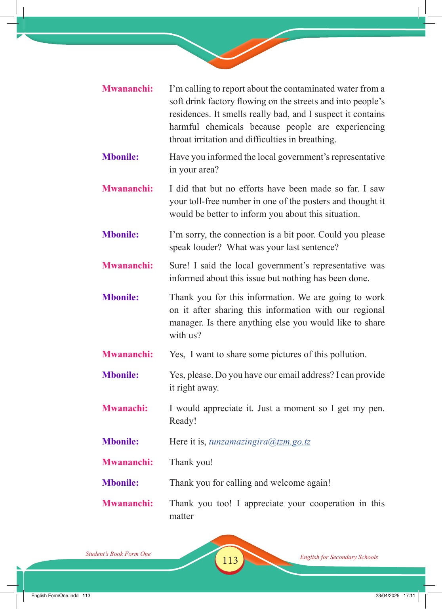

Accessible text transcript - page 113
Use the reader's read-aloud controls or select an individual segment below.
Printed book page 113. Mwananchi: I’m calling to report about the contaminated water from a soft drink factory flowing on the streets and into people’s residences. It smells really bad, and I suspect it contains harmful chemicals because people are experiencing throat irritation and difficulties in breathing. Mbonile: Have you informed the local government’s representative in your area? Mwananchi: I did that but no efforts have been made so far. I saw your toll-free number in one of the posters and thought it would be better to inform you about this situation. Mbonile: I’m sorry, the connection is a bit poor. Could you please speak louder? What was your last sentence? Mwananchi: Sure! I said the local government’s representative was informed about this issue but nothing has been done. Mbonile: Thank you for this information. We are going to work on it after sharing this information with our regional manager. Is there anything else you would like to share with us? Mwananchi: Yes, I want to share some pictures of this pollution. Mbonile: Yes, please. Do you have our email address? I can provide it right away. Mwanachi: I would appreciate it. Just a moment so I get my pen. Ready! Mbonile: Here it is, tunzamazingira@tzm.go.tz Mwananchi: Thank you! Mbonile: Thank you for calling and welcome again! Mwananchi: Thank you too! I appreciate your cooperation in this matter Student’s Book Form One English for Secondary Schools English FormOne.indd 113 23/04/2025 17:11 Return to the page image